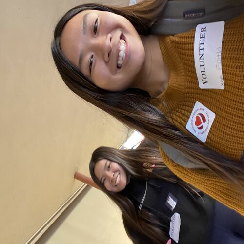
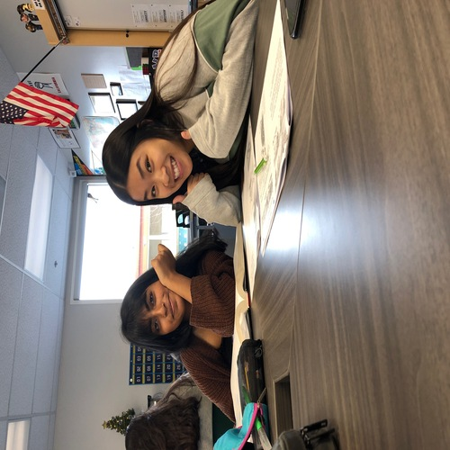
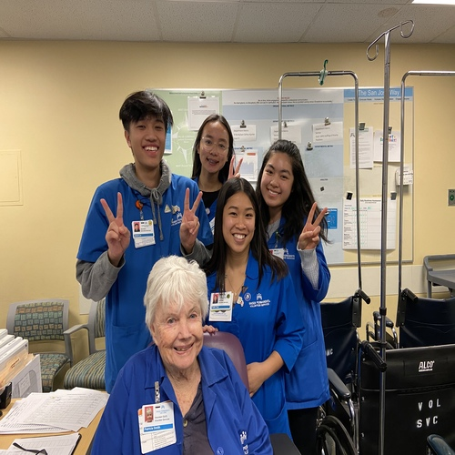
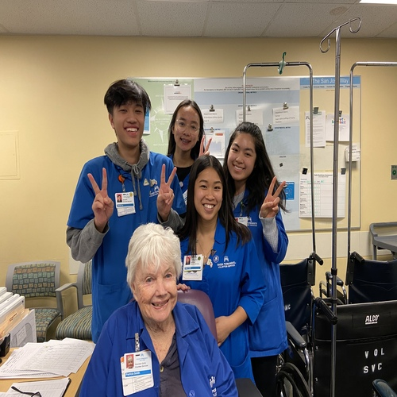

Faith Tran
Hello! Nice to meet you, my name is Faith Tran and I am a first year Pre-Business major at the University of California, Riverside, where I will eventually enter the School of Business Administration and study a concentration. I do not have a particular concentration in mind yet, but I am interested in marketing and finance. While I take more business classes in the future I will start to consider what direction I would like to follow for my career.
My professional experience includes volunteering at many organizations. Before the COVID-19 pandemic I dedicated my junior and senior year of high school to volunteering at my local library where I read to children, as well as a hospital near my school where I help nurses and hospital staff wherever possible.
By the time I move out of the dorms here at UCR I plan to get a job to both gain a glimpse at the working world and build connections. On that same note, I would like to rush for a business fraternity to expand my network and have a group of peers I can rely on and relate to. In regards to clubs at university, I am very involved with the Vietnamese Student Association. As an intern for the staff, I am planning the biggest fall quarter event that facilitates the pairing of over 400 members into Big and Littles, based on just over a week of events!
In my free time I like to embroider clothes, read, and learn music theory! I am currently dorming by myself in the middle of a pandemic so I have a lot of free time to pick up new skills and freshen up on old ones.
Experience
President of Red Cross Club
• Built connections with local American Red Cross chapter
• Helped facilitate a school blood drive
Reader to Children
• Responsible for reading to children
Volunteer Services
• Discharged patients on wheelchairs
• Delivered confidential documents to nurses and doctors
• Created a welcoming environment for patients, visitors, and members
VSA Intern
• Planned a major in person event
• Encouraged club activity and participation during meetings
Education
University of California Riverside
Portfolio




